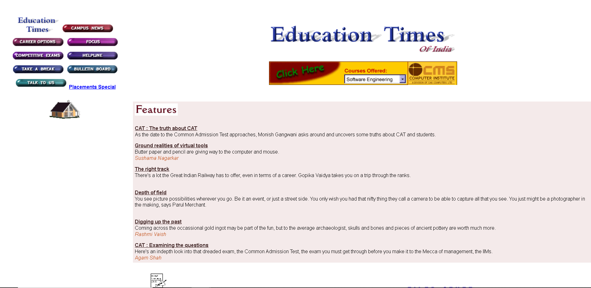
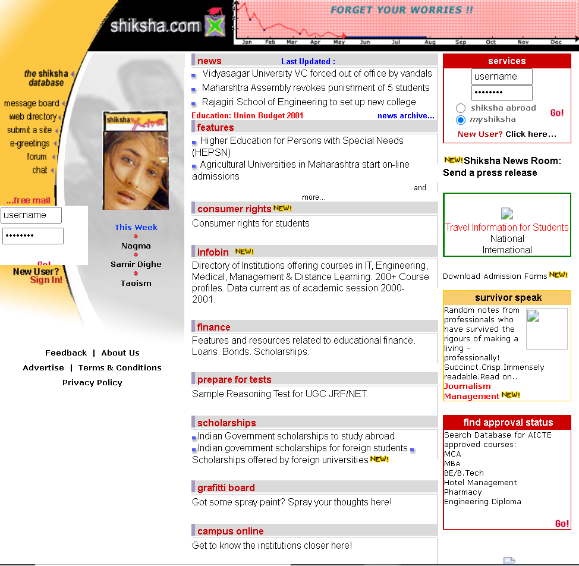
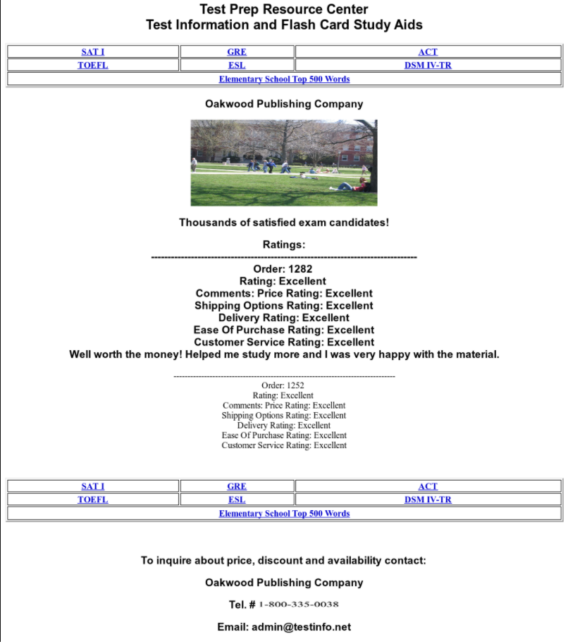

EDUCATION
Online education

Education process has changed due to the use of the internet. Teachers use it to supplement lessons, communicate with the students even overseas. The widespread use of the internet has opened up education in poorer countries and distant learning opportunities for a broader range of people. In fact, it can be claimed that the internet has erased any boundaries in education.
It is undeniable that the internet is very useful and helpful since it helps contributing to the improvement of education:
- Lesson enhancement
- Communication
- Convenience
- Interactive materials
- Research
- Accessibility
Advantages of online education
- Research has been made easier.
- Students can interact with other students worldwide.
- Enhance distance learning.
- Broaden students mind by exposing them to things outside their periphery.
- Contributed to personalized learning, the teacher can easily control students time in tests.
- Automate student grading system.
- A student can learn life skills through the internet.
- Prepare the student for future deep-rooted technology.
|
 |
|
Educationtimes.com |
Typical online study materials
| Shiksha.com |
Testinfo.net |
|  |
 |